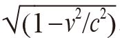
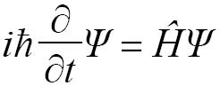

学校里有一个非常奇怪的现象：在中学毕业之前，学生们学习的物理学知识与19世纪末的物理教学内容完全相同。对于1900年以后的物理学，他们可能略知一二，但是，除非他们上大学之后继续学习物理，否则就不大可能了解这门科学在20世纪到底取得了哪些发展（更不用说21世纪的物理学了）。
其他学科则几乎不可能发生这样的情况。例如，如果英语课只介绍19世纪90年代之前的文学作品，大家肯定会觉得十分奇怪。但是，从1900年至今，文学领域的变化远比不上物理学，因为20世纪产生了两大革命性理论——相对论和量子论，1900年之前的所有物理学知识都无法逃脱被修改或者被摒弃的命运。作为新科学的组成部分，这两大理论都从数学那里获得了重要的推动力。
相对性这个基础概念要追溯至伽利略时代，痴迷于研究对称的人（参见下一章）肯定认为相对性与对称的本质——不变性有关。所谓不变性，是指不会随周围环境的变化而变化的力、物体或物体的某种特性。也就是说，即使发生某个特定变化，某事物的活动方式与结果仍然保持不变。在伽利略提出的相对性原理中，不变与稳态运动有关。
众所周知，伽利略曾经对人们深信不疑的几个古代信条提出过严厉批评，他提出相对性原理也是出于这个目的。据传，伽利略在一次外出游湖时证明了相对性这个概念。当时，他和几位朋友在皮耶迪卢科湖上泛舟，船以某个固定速度前进。伽利略问谁身上有比较重的物体，他的朋友斯泰卢蒂拿出自己的钥匙，递给伽利略。这把钥匙是铁制的，很大很结实，如果丢失，将很难配制。伽利略接过钥匙，朝着正上方用力抛出去。因为6名船工正在奋力划桨，因此船前进的速度非常快。斯泰卢蒂赶紧向船后方跑去，希望能接住掉下来的钥匙。但是，另外几名朋友拉住了他。最终，钥匙垂直掉下来，落在伽利略的大腿上。
伽利略通过这个“实验”证明了他提出的观点：在稳态运动的物体上，例如那条船，我们可以顺利完成任何物理实验，实验过程中不会受到船以外世界的任何影响，实验结果与我们在静止状态下完成的实验没有任何不同。如果伽利略坐在岸上不动，斯泰卢蒂知道钥匙肯定会垂直上升然后垂直下落。但伽利略却知道，在船上抛钥匙也会得到同样的结果。所谓“相对性”，就是伽利略发现相对钥匙而言，船并没有移动。只有相对于其他事物，才可以发现或探查到稳态运动。所以，伽利略规定了“船以外世界”这个条件。比如，与湖岸相比，船正在运动，并且我们可以通过实验方便地探查出船的运动状态。
伽利略的研究并没有使用复杂的数学知识，但即便如此，学校的科学课程也往往不会把伽利略的相对性理论纳入教学内容。似乎只要提起“相对性”这个词，就会让那些教育家们感到害怕。我们会把结果教给孩子们，但是我们不会认真解释相对性这个重要概念的真正含义。我知道，大多数教师都会辩解说，他们之所以没有深入讨论，是因为这些内容太难了。当然，如果讨论广义相对论和量子理论，对知识水平的要求肯定不是中学生可以达到的。但是，如果只要求他们掌握相对性和量子理论的概念，就不会有太大的难度了。事实上，我到学校做报告时，发现学生们理解这些概念的速度比成年人更快，这可能是因为年轻人更习惯于接受新奇的东西。
然而，爱因斯坦改进伽利略相对性原理的第一个成果——狭义相对论，对数学水平的要求并不是太高，所以实在没有理由将它排除在中学课程之外。的确，理解狭义相对论需要掌握数学知识，而且这些数学知识与牛顿定律中使用的我们习以为常的数学知识有所不同，但是，两者之间的跨度是可以接受的。此外，狭义相对论是一门有极强吸引力的科学。比如，一讲到时空穿梭机，学生们个个都正襟危坐，认真听讲。因此，中学不教授狭义相对论是没有任何道理可言的。
从本质上讲，爱因斯坦的研究实际上是对伽利略的相对性概念进行了拓展，并将麦克斯韦揭示的光的本质也纳入其中。麦克斯韦的研究表明，速度是电磁波的一个决定性特征。根据伽利略的相对性原理，如果我们与某个正在运动的事物并肩前进，而且速度相同，对我们来说，这个“正在运动的事物”就是静止不动的。因此，在伽利略把斯泰卢蒂的钥匙朝正上方扔出去后，钥匙会掉落在他的大腿上。但是，如果这个原理同样适用于光，那么与光并肩前进就会改变光的速度。一旦光的传播速度不等于光速的定义值，光将不复存在。
一般人可能会认为麦克斯韦错了，但是爱因斯坦十分赞赏麦克斯韦的证明过程。他由此推断光与其他事物不同，即使我们与光做相对运动，光的速度也不会发生改变。这似乎是一个无关紧要的变化，但是一旦把这个变化放入研究运动的基础数学（始于伽利略和牛顿）中，就会对现实的本质产生令人惊讶的影响。
所谓的“光钟”就是一个非常简单的例子，可以帮助我们了解这种变化的影响力。光钟这种装置没有钟表的“滴答”声，取而代之的是一束光在两个水平镜面之间不断反弹。当上下传播时，光束始终在一条直线上。假设把光钟放到一艘透明的宇宙飞船中，然后我们在地球上用一台超级望远镜观察它。如果飞船没有与地球做相对运动，那么地球上的人与飞船上的人从光钟上看到的时间应该是一模一样的。在这两个人看来，光钟都没有移动，因此光束在镜面之间反射时肯定与镜面垂直。
现在，我们假设飞船正在以一个很快的恒定速度相对于地球运动。伽利略的相对性原理告诉我们，对飞船上的人而言，飞船里没有发生任何变化，光钟在他们眼中没有运动，那束光继续沿着直线稳定地上下传播。但是，地球上的人却看到了某些变化。现在，假设那束光刚好从光钟顶部的镜面上反射出去，在它到达底部镜面的这段时间里，飞船将发生侧移。于是，光将不再垂直向下传播，而是沿着一条更长的斜线传播。在光返回光钟顶部的镜面的过程中，同样的现象将再次发生。也就是说，光将成“之”字形传播。
如果伽利略的相对性原理是正确的，情况就会大不相同。假设我们坐在皮耶迪卢科湖岸边，观看湖面上伽利略乘坐的那条船。船上有一个与光钟相似的东西，正在由上向下发射一串钢珠。在船上的人看来，“光钟”没有动，钢珠将沿着垂直方向向下运动。但是，我们坐在岸上会看到船与钢珠都在发生侧移，因此我们会将钢珠的两种运动加到一起，计算出一个新的速度。但是，如果爱因斯坦是对的，也就是说，无论我们以何种方式与光做相对运动，光的速度都会保持不变，那么地球上的人在观看光钟时，看到的情景就会与飞船上的人不同。光传播的距离增加了，但是速度不会改变。
这就意味着肯定有其他因素发生了改变，光才可以按时抵达目的地。爱因斯坦通过数学计算，发现必然会产生三种效应。从地球上看，飞船上的时间变慢了，运动距离缩短了，飞船的质量增加了。根据狭义相对论，空间和时间再也不被视为两个完全独立的实体，研究两者的结合体——时空，变得非常有必要。
事实上，要解决这个问题，只需要学习一点儿古希腊几何学和计算平方根的数学知识（所以，中学生应该学习狭义相对论）即可。爱因斯坦根据光钟的几何结构，再通过几个思想实验，计算出通常被称作伽马（γ）的关键因子就等于

，其中v是观察者观察到的运动物体的速度（本例中就是宇宙飞船的速度），c指光速。我们还是以光钟为例。如果飞船上的时间变化量为t，那么对于地球上的观察者而言，这段时长是t/γ，即t/。这个表达式看似涉及高深的数学知识，但其实非常简单。如果v等于0，即飞船保持静止，则v2/c2等于0，除数为1，最后得数就是t。此时，对于飞船与地球上的人而言，时间流逝的速度是相同的。
但是，随着v越来越接近光速（c），t被一个越来越小的数除，因此从地球上观察，这段时间就会越来越长。如果γ等于1/2，则这段时间等于2t。如果γ等于1/4，则这段时间是4t。对于飞船上的人而言，时间流逝的速度没有任何变化，但是对地球上的人来说，飞船上时间流逝的速度变慢了，当飞船上流逝的时间为t时，地球上的时间已经流逝4t了。
最让人感到奇怪的是，相对性是完全对称的。地球上的人往往把地球表面定义为“静止”，但是这个判断具有主观随意性（尽管通常比较方便）。毕竟，地球不仅绕着轴线自转，沿着轨道围绕太阳公转，还与银河系一起在太空中高速遨游。但是，我们往往不会这样想，而是采用了伽利略站在游船上的视角，认为船是静止的，而周围世界正在向我们身后运动。与之类似，从飞船乘客的视角来观察，飞船根本没有动，而地球正在向远方高速飞去。至于选择其中哪方作为固定点（科学家常常称之为“参照系”），我们没有一定之规。因此，如果飞船上的乘客可以看到地球上的光钟，他们就会发现因为地球正在远离飞船，所以地球上的时间变慢了。
我在这里并不是要讨论以接近光速飞行会产生哪些结果，但是我必须简要说明在著名的“时间膨胀”效应的例子中为什么没有这种对称性。在这个思想实验中，两个双胞胎姐妹参与了一项飞船任务。其中一个人是任务主管，另一个人是宇航员，后者要乘飞船以接近光速的速度飞行，执行一个长期任务。假设任务开始时两姐妹正好30岁，至任务结束时，“宇航员”感觉时间过去了5年，但是她发现留在地球上的姐姐却长了10岁。
如果相对性像上文所说的那样具有完全对称性，那么这个思想实验似乎不应该出现这样的结果。在飞船以恒定速度飞离地球时，对称性应该始终发挥作用。但是，这种对称性随后发生了改变。在某个时刻，宇航员必须向飞船施加一个作用力，让它减速，然后加速返回地球。抵达地球时，她需要再施加一个作用力，使飞船的运动速度等于地球的运动速度。这个变化只发生在飞船上，而没有发生在地球上。在它的影响下，时钟被校准了，所以宇航员感觉时间只过去了5年。
毫无疑问，狭义相对论的数学运算经常给出一些令人惊讶的结果，包括时间膨胀、没有质量却有动量的粒子（例如光子），以及把能量与质量联系到一起的终极方程E = mc2。然而，一般而言，其中用到的基础数学知识对于高中生来说并不是很难。但是，广义相对论的情况有所不同。在研究广义相对论时，即使爱因斯坦也要在数学上向人求助。尽管关键的几个方程看似非常简单，但是其中隐藏了极大的复杂性，只有在特例中才可以求解，而不是在任何情况下都能找到答案。
广义相对论将加速度和万有引力纳入其中（因此，与狭义相对论相比，广义相对论中的相对性具有普遍性），但是它所涉及的基础知识并不是特别难。广义相对论始于现在被称作等效原理的想法（爱因斯坦称之为“最快乐的思想”）。
爱因斯坦产生这个想法的时候还是一名业余科学家，在瑞士专利局上班。（爱因斯坦在这里完成了狭义相对论的全部工作，但是他在完成广义相对论的主要研究前，一直未获得学术界的认可。）他后来说：“当时，我正坐在伯尔尼专利局的椅子上，突然我的脑海里闪过一个念头：如果一个人做自由落体运动，他肯定不会感受到自己的体重。我吓了一跳。这个简单的想法让我久久不能忘怀，在它的驱动下，我开始研究万有引力理论。”
不熟悉广义相对论的人，无法从爱因斯坦的这番话中看出他当时到底想到了什么。爱因斯坦其实是在举例子。如果有人从非常高的建筑物上掉下来，他就会加速下落，而且加速度是一个标准值，由地球与他的身体之间的万有引力决定。但是，与此同时，他会有失重的感觉。就像国际空间站里的宇航员一样，他会感觉自己飘浮在空中。当然，你在从高处掉落时会使周围空气发生振动。因此，想象你在箱子里，与箱子一起做自由落体运动，效果可能会更好。实际上，国际空间站的宇航员之所以有失重感，唯一的原因是他们正在下落。
值得注意的是，空间站高度上的地心引力强度与地面其实非常接近，大约是正常地心引力的9/10。造成宇航员失重感的原因是空间站正在垂直下落，就像从建筑物上掉下来的人一样，正在做自由落体运动。两者之间唯一的区别是空间站还在向侧方高速运动，因此，尽管它一直在下落，却怎么也到不了地面。这是进入运转轨道之后必然产生的结果：一直在下落，却怎么也到不了地面。
因此，那些飘浮在空间站中的宇航员就是一个平常而真实的例子，他们向我们演示了爱因斯坦的想法：做自由落体运动的人感受不到自己的体重。在他们加速下落的时候，他们本来可以感受到的引力被抵消了。相比之下，如果我们下落的加速度超过了引力的作用，我们就会产生引力场正在将我们朝相反方向拉扯的感觉。大家想一想，飞机沿跑道开始加速时，你会有什么样的感觉？你会感到一种与引力非常相似的压力，将你推向椅背。如果加速度足够大，你就可以体验到宇航员或者战斗机飞行员经常感受到的“几倍重力”的感觉，你会觉得体重变得非常沉。
接下来，我们看看爱因斯坦当时想到了什么。宇航员和从高楼上掉下来的人在自由落体的过程中都感觉不到自身的重量，这个事实说明加速度与万有引力的体验完全相同。他在脑海里想象出一个与伽利略的设想非常相似的情境。当初，伽利略在考虑相对性时，想象自己身处一个平稳前进、没有窗户的船舱中。他发现，无论在这个船舱中做什么实验，都无法确定自己是在运动还是静止状态。爱因斯坦在研究狭义相对论时，还考虑了光速不变这个条件。现在，他又把加速度加了进来，要考虑的东西更多了。
假设你在一艘没有窗户的宇宙飞船中，有一个大小不变的力正在将你推向飞船的后部，使你感受到自己的体重。爱因斯坦称，飞船有可能正降落在某个星球上，且该星球的引力正好与将你向后推的力大小相等；飞船也有可能正在太空中，在引擎的推动下以恒定的加速度提高飞行速度。但是，你无法在飞船中通过做实验来判断它到底处于哪种状态。引力的拉动与加速度是等效的，二者无法区分。
爱卖弄的学究（喜欢卖弄的人往往与科学研究有密切关系）可能会辩解，严格地说，这两种情况是可以区分的，因为我们可以在飞船内部四处走动。既然如此，我们可以在飞船后部和前部各做一次实验。如果飞船在加速，两次实验结果应该没有什么不同，因为飞船各个位置的加速度是一样的。但是，如果是受引力作用，我们就可以从实验结果中看到细微的区别，因为飞船前部离星球更远，我们感受到的引力作用会弱一些。这个说法完全正确，但是它不符合等效原理，因为等效原理要求在太空中选择一个点，然后讨论该点的情况，而不允许我们在飞船中四处走动。
在这艘想象的飞船上，我们还可以做另外一个极其重要的实验。假设我们把狭义相对论实验中使用的光钟带上了飞船。我们知道，当飞船以稳定的速度飞行时，在飞船上的人看来，光钟没有移动，光束也不会受到任何影响，而是继续在两个镜面之间上下传播。现在，假设我们打开飞船的引擎，让飞船不再以恒定速度相对地球运动，而是开始加速。即使身处飞船内部，我们也能感受到飞船在加速。当光从顶部镜面反射到底部镜面时，飞船上的乘客可以看出光的传播路径发生了变化。
这个现象非常有趣，表明伽利略的“无法通过实验区分”相对性的断言在加速度条件下是不成立的。但是，我们无须光学实验就可以知道他的说法不对。我们的身体能感受到加速度的效应，我们还可以在手机上安装一个加速度计。但是，等效原理可以告诉我们一些更有趣的事情。我们已经知道，如果飞船加速运动，光的传播路径就会改变。既然如此，如果飞船在引力场中，肯定也会出现同样的现象。爱因斯坦由此意识到万有引力的一个基本特性：物质具有弯曲时空的能力。具有质量的物质可以使时空弯曲，因此，我们看到本来应该直线传播的光束的路径发生了变化。
这些话听上去似乎有点儿耳熟。还记得绕地球运转的空间站吗？空间站沿着地球切线的方向飞行，飞行路线也是直线。本来，空间站应该会飞离地球，进入太空，但是地球质量使时空发生了弯曲，于是空间站的飞行路线也随之弯曲，并形成了轨道。因此，当飞行物遇到巨大物体时，飞行路线会发生弯曲。但是，静止的物体（例如苹果）为什么会突然加速落到地面上呢？这里，我们需要了解一个重要的事实：发生弯曲的不是空间，而是时间。尽管苹果在空间中保持静止，但在时空中却不是静止的，因为时间一直在滴滴答答地流逝。也就是说，苹果加速掉落是时间弯曲的结果。
这些解释可以帮助我们了解广义相对论，但是目前还没有涉及相关数学知识。知道这些内容可以让我们对广义相对论有一个粗浅的了解，但还不足以让我们将它应用到科学研究中。爱因斯坦擅长运用有限的数学工具，把思想实验的情况直观地表现出来，然后添加大量的数学内容，明确这个思想实验可能产生的结果。在研究广义相对论时，添加数学内容的工作持续了几年时间，其中大部分工作是在1911年（因为对量子理论的研究让爱因斯坦痛苦不堪，所以他决定暂时停止这项研究）至1915年完成的。
爱因斯坦面临的第一个问题是，他需要摆脱欧几里得2 000年前深入讨论的几何学（参见第4章）。我们知道，古希腊人是在一个平整的表面上研究毕达哥拉斯定理与欧几里得几何定理的。他们认为这些都是理所当然的，以至于不愿意花费力气把它们表述成公理。但是，稍加考虑，我们就会发现这个假设条件有点儿奇怪。别的不说，单是真正平整的表面，古代就比现代少得多。柏拉图的完美原型自然可以做到真正平整，但是它们投射到现实世界的山洞中的阴影则不可避免有瑕疵。古希腊人规定了几何学研究的直线与现实世界不同，且没有粗细之分，但是没有任何人明确地表述过平整表面这个假设。
让我们感到奇怪的另外一个原因是，古希腊人知道地球不是平的，但他们还是一如既往地做出了相反的假设，也就是说，他们假设地球是平的。在中世纪之前，人们普遍认为平坦的地球是标准模型，但与此同时，所有受过教育的人都认为地球只能是一个球体，而且早在古希腊时代，人们就已经证明了这一点。因此，尽管几何学令古希腊人深感自豪，尽管它的名字包含“测量地球”之意，但是在研究地球的曲面时，这门科学其实并不适用。
前文说过，垂直于赤道的平行线相交于地球两极。这已经反映出几何学的问题了，如果我们再考虑三角形这个最常见的几何图形，就可以更加清楚地看出这个问题。欧几里得的《几何原本》（卷一）的第32个命题告诉我们：“在任意三角形中，如果延长一边，则外角等于另两个内角之和，而且三角形的三个内角和等于两个直角的和。”换成我们熟悉的语言就是，欧几里得认为，三角形的三个内角和等于180度。
在欧几里得精心搭建的几何系统中（别忘了，在这个命题之前，还有31个其他命题），这个命题肯定是对的，不容置疑。可是，一旦离开了平整的表面，它就不成立了。在地球这个等球体上（地球至少是一个近似球体），与直线相对应的是大圆。显然，球面上的所有线不可能在所有三个维度上都是直线。事实上，所有线都是弯曲的，曲率与地球表面相同。大圆是指围绕地球表面且圆心与地球球心重合的所有曲线。
我们可以做一个简单的实验，利用大圆构建一个三角形，就可以彻底推翻欧几里得几何学。我们从赤道这个大圆上取两个不重合的点，然后从这两个点开始，向北极方向各作一条与赤道成90度角的直线（分别与另一个大圆重合）。这两条直线将在北极相交，并构成一个夹角。赤道上两点之间的距离越大，两条直线在北极形成的夹角就越大。接下来，我们计算这个三角形的内角和。赤道上的两个角各为90度，第三个角的度数还不确定，但它们的和肯定超过180度。事实上，如果赤道上两点之间的距离为10 000千米（约等于赤道至北极的距离。千米这个单位当时就是通过这个方法定义的），这个三角形就是一个等边三角形，三条边的长度都相等。此时，三个内角都是90度，因此这个三角形的内角和是270度。
由此我们知道，爱因斯坦在计算广义相对论中的时空曲率时，是无法使用欧几里得几何定理的，因为他使用的数学工具必须可以处理曲面。更令人吃惊的是，他甚至还要处理四个维度（包括三个空间维和一个时间维）全部弯曲的情况。爱因斯坦的朋友马塞尔·格罗斯曼为他提供了一个解决方案：德国数学家伯恩哈德·黎曼创立的当时最先进的弯曲空间几何学。
此时，爱因斯坦的研究成果已经引起所有人，尤其是德国杰出的数学家戴维·希尔伯特的注意。希尔伯特曾邀请爱因斯坦到他任教的哥廷根大学做报告。之后，他对爱因斯坦的关注度进一步提高。当时，爱因斯坦的研究仍然有几个不完善的地方，希尔伯特似乎认为，他应该赶在爱因斯坦之前完成改进工作。事实上，尽管爱因斯坦先于希尔伯特发表了第一篇完整的广义相对论论文，但人们一度认为希尔伯特率先完成了那些方程，只不过他发表论文的时间晚于爱因斯坦。后来，人们发现希尔伯特的原始论文本身存在若干缺陷，他在看到爱因斯坦的论文之后才进行了修改，因此首发权仍然应该归属于爱因斯坦。
无论第一个完成这项工作的人是谁，第一个着手研究广义相对论的人毫无疑问是爱因斯坦。与牛顿和莱布尼茨在微积分开创者问题上的纷争不同，爱因斯坦与希尔伯特并没有相互指责，希尔伯特还大度地承认这是爱因斯坦的杰作。整个研究成果可以用一个看起来十分简单的方程表示：
Gµv + Λgµv = (8πG/c4)Tµv
除了光速的四次幂以外，整个方程看起来似乎非常简单，但是那些带有µv下标的参数都不是简单的变量，而是爱因斯坦从黎曼研究成果中借鉴而来的张量——一种功能强大但是难以操作的数学工具。张量可以把不同数值、矢量以及其他张量之间的多维关系压缩成一个单项。这个单项看似非常简单，但是其背后隐藏着一个变量矩阵。把引力场方程中的张量展开，将会变成10个基本微分方程，而且其中涉及的值会根据在空间和时间中的位置不同而发生变化。
牛顿的万有引力理论包含一个简单的基本方程（牛顿本人并没有使用这个方程）：
F = Gm1m2/r2
整个方程只涉及常数G、两个天体的质量与它们之间的距离（r）。爱因斯坦的方程也有G，但是其他需要考虑的因素远不只是质量的影响作用，尽管质量非常重要。其中一个关键因素是，物体质量不固定且随着运动发生变化（根据狭义相对论）。能量可以增加质量。后来，爱因斯坦还证明了能量也可以增加引力。质量的效应则主要是使时间发生弯曲。
与此同时，空间也会发生弯曲。宇宙飞船加速时导致光束弯曲的根本原因就是空间弯曲。与时间不同，空间弯曲需要考虑所有三个维度，每个维度上有两个方向，因此爱因斯坦需要考虑的因素又多了六个。此外，他还要综合考虑一些稀奇古怪的东西，例如惯性系拖曳效应（由于相对性效应，运动物体会产生一个垂直于运动方向、强度不大的引力）。爱因斯坦需要考虑的最后一个问题是，引力会产生某种形式的能量（某些物体，如高山上的石头，因为位于引力场的高处而具有势能）。我们已经知道，能量可以产生引力。于是，它们就会形成一个小的反馈回路，引力又摇身一变成了一个引力源。
与狭义相对论不同，广义相对论使用的是寻常人并不熟悉，甚至永远也不会熟悉的数学知识。事实证明，这些复杂方程的求解极富挑战性。尽管在特例中解这些方程并非难事，但是它们没有一般性解法。麦克斯韦通过求解复杂方程，预测到电磁波这个意想不到的物理实体的存在，这是人们利用数学工具进行类似预测的早期实例。现在，根据广义相对论方程，人们又预测到黑洞的存在。
黑洞这个概念要追溯至18世纪。当时，英国天文学家约翰·米歇尔发现，如果天体的质量足够大，它的逃逸速度（摆脱该天体引力必须具备的速度）就会非常快，甚至能超过光速，因此光也有可能无法从这种暗星上逃逸。后来，德国物理学家卡尔·史瓦西受到爱因斯坦相对论的影响，重新提出这个概念，那时米歇尔的研究早已被人们遗忘了。
史瓦西提出这个概念的时间是1916年，当时他正在参加第一次世界大战，而相对论也只发表了几个月。此时，爱因斯坦本人仅仅求得了部分近似解，做出水星轨道是变化的这个可以检验的预测。但是，躲在战壕里的史瓦西却得到了黑洞这个特例的精确解，指出星体耗尽支撑其重量的燃料之后，就会因为无法抵抗自身引力而坍缩，最终变成黑洞。
但是，史瓦西并没有把他的预测结果称作“黑洞”，这个名词直到20世纪60年代才出现。人们通常认为黑洞这个名称是约翰·惠勒发明的。虽然惠勒肯定是最早使用这个名称的科学家之一，但是第一个想出这个名词的人似乎不是他。1964年1月，在美国科学促进会的一次会议上，有人开始传播这个术语，但这个人不是惠勒。随后，安·尤因在《科学简讯》上发表了一篇介绍这次会议的文章，把这个术语变成了铅字。也就是说，这个名称源自那次会议，但是无法确定发明者。
无论黑洞这个名称源自何处，我们都知道黑洞从何而来，答案就是数学。在检验科学模型的有效性时，我们往往会考察它能否预测出当初没有被纳入模型的现实世界的情况。因此，爱因斯坦急匆匆地求得方程的部分近似解，并开始预测水星轨道的特点。不久之后，人们利用日食发生的时机，通过观察从太阳旁边经过的星光，证实了相对论关于引力可导致光束弯曲的预测是正确的。但是，在预测黑洞的存在之前，几乎没有人仅利用模型就预测出一个所有人见所未见，甚至想都没想过的物理实体。
即使是现在，与其说黑洞是科学研究的对象，还不如说它是数学的产物。天文学家在太空深处观察到很多天体，有间接证据表明，从它们表现出来的特点看，这些天体似乎就是黑洞。尽管这些证据有很强的说服力，但所有证据都只是间接证据。我们从来没有直接观察到黑洞，只是借助数学工具推演出我们在银河系中心可能观察到的那些景象（据猜测，银河系中心有一个无比庞大的黑洞）。这里应用的数学绝对位于现实世界的边界线上，似乎与真实世界存在某种关系，但尚未得到证实。有人（例如马克斯·泰格马克）认为，数学与现实之间的联系永远达不到严丝合缝，如果我们可以近距离分析黑洞，就可以证明这些预测都是错误的。
尽管相对论的证明工作非常重要，但是在此期间，爱因斯坦还投身于物理学的一个新分支——量子物理领域，并在其中发挥了重要作用。量子物理是一个研究微观世界的物理分支，同样具有革命性意义。20世纪初，原子尚未被视为一种确定存在的实体，而只是一个有用的概念性工具，可用于预测物质有哪些特征。但随后，人们不仅证明了原子的确存在（主要是爱因斯坦的功劳），而且发现原子具有一些看似完全违背自然规律的特征。这实在是一个自相矛盾的悖论，因为自然界主要是由这种量子构成的。
量子物理非常复杂（它研究的是由原子、电子、光子等粒子构成的微观世界），本书不准备对其进行深入讨论，但是量子物理在其发展过程中得出了两个非常重要的观察结果，可以帮助我们了解数学对于宇宙探索的重要意义。爱因斯坦和丹麦物理学家尼尔斯·玻尔等人是最早进入量子物理领域的科学家。他们很快发现，如果从量子的层级来研究宇宙，就必须抛弃很多关于物质和光的特征的假设。例如，人们早就认为光是一种波，这个假设也已经得到了麦克斯韦的证实。但是，在新兴的量子物理研究领域脱颖而出的大咖们告诉人们，所谓的光波特性，不过就是一个模型。光的确具有类似于波的特性，但它也可以被描述成一堆粒子或者场扰动。
在解释原子中的电子与光的相互作用时，玻尔受行星绕太阳运行的启发，试图把这些电子放入类似的轨道。尽管这个模型早在20世纪20年代就已经过时了，但是我们仍然可以在几乎所有的原子平面结构图中看到它的身影。玻尔很快就发现自己的这个想法行不通，于是他为这些电子设计了多个轨道，让电子可以在不同的轨道之间跳跃，但是不允许它们停留在轨道中间。我们所熟悉的那些看得见、摸得着的“真实”事物不具有这种特征，但是这些量子却表现出这个特点。
玻尔的原子研究没有多少实用价值，但激起了一些年轻科学家的兴趣，其中最有名的当属沃纳·海森堡和埃尔温·薛定谔。他们决定在简单的玻尔原子模型的基础上，用数学描绘出量子的相互作用。海森堡更加彻底，他提出的矩阵力学利用纯粹的数学方法，描述量子的特点。他根本不考虑借助模型这种直观表示，而是通过操作矩阵（即数组），摇动手柄，使黑箱模型像麦克斯韦电磁波方程组一样，做出一些重要的预测。
薛定谔不喜欢这种抽象的方法，因此他利用波这种熟悉的形式，考虑如何建立量子行为的模型。时至今日，薛定谔方程对于我们理解量子物理仍然具有非常重要的意义。它同样属于形式十分简单、实质却十分复杂的方程：

从数学的角度看，这个方程的某些特点足以让你胆战心惊。首先，该方程使用了–1的平方根i。其次，就像爱因斯坦方程中的张量一样，薛定谔方程中的希腊字母Ψ和戴帽子的Η这两个符号都暗藏玄机。Ψ是描述某个系统本质的波函数，表达式非常复杂，而戴帽子的Η指“哈密顿算符”，表示系统中的能量并将其应用到波函数之中。
最初，人们以为薛定谔方程中的波函数，或者说该函数值的平方（谢天谢地，终于摆脱了那个让人讨厌的i），表示的是量子在系统中的位置。但是，真如此的话，似乎就可以预言所有量子无时无刻不在扩散，并且越变越大，但是没有实验可以证明这个预测。（谢天谢地，否则我们将身处一个无比奇怪的世界。）再次，人们发现该方程预测的是量子处于某个位置或者系统处于某种状态的概率。
除了这个方程和令人晕头转向的数学应用，量子理论研究还产出了大量其他成果。例如，将相对论引入量子行为研究的狄拉克方程（它有一个副产品，即预测了反物质的存在），以及在量子理论的基础上发展而成的量子电动力学等。但是，只需要看看海森堡和薛定谔，我们就可以看出科学家在“采撷”数学运算结果而不单纯依靠直接观察的道路上取得了两次重要的突破。
海森堡在他的矩阵力学中使用了完全数学化的描述方法，薛定谔紧随其后，他的方程把概率纳入其中。爱因斯坦辛辛苦苦地把量子理论带到我们这个世界上，但是在涉及概率之后，他发现在量子这个层级，如果不经过测量，所有的存在都只是一种可能性。例如，如果刚刚没有测量过，就无法确定量子的位置。人们常说，量子在同一时间里的可能位置有两个，但是真实情况似乎更加复杂，展现在人们眼前的是概率织成的一张网。这让爱因斯坦感觉很不舒服，因此他立刻停止了这项研究。
从本质上讲，量子物理似乎从根本上把现实变成了数学。根据量子理论，如果不是正在测量，关于现实世界的所有观察结果对概率的依赖程度都会很大。乍一看，这与抛硬币似乎没有本质上的不同。在公平的抛硬币游戏中，得到正面与反面的概率通常各占一半。但是，一旦硬币被抛出去，出现某种结果的可能性就是100%，而出现另一种结果的可能性则是0。只不过在硬币落地之前，我们不知道这个结果到底是什么。但是，如果抛出去的是一枚量子硬币，我们得到的就真的只有各占一半的概率，在进行测量并得出结果之前，前面说的那种潜在确定性是不存在的。
尽管数学概念与真实的量子之间的这种关系似乎不可信，但是多年来已经有大量实验证明了它的真实性。事实证明，“现实世界建立在数学基础之上”的说法属于夸大其词。从某种意义上讲，这个说法已经不像以前那样令人吃惊了。数学仍然是现实的模型，而不是一种绝对的描述。概率与推动现代物理发展的抽象数学不同，它是作为应用数学工具被人们发明出来的。概率源于抛硬币等真实操作的观察结果，只不过在量子物理中，它表现出之前没有的独立性。这并不是说量子就是概率，而是说我们通常只能以概率的形式来描述它们。
即使在伽利略和牛顿的时代，物理学领域也不时可以看到对称的身影，例如牛顿第三运动定律就描述了一种令人赏心悦目的对称，人们对相对论莫衷一是的态度也形成了一种对称。但是，随着历史的车轮进入20世纪并继续前行，对称展示出新的活力，对科学理论的发展起到显著的推动作用。从此，数学真正地占据了主导地位。